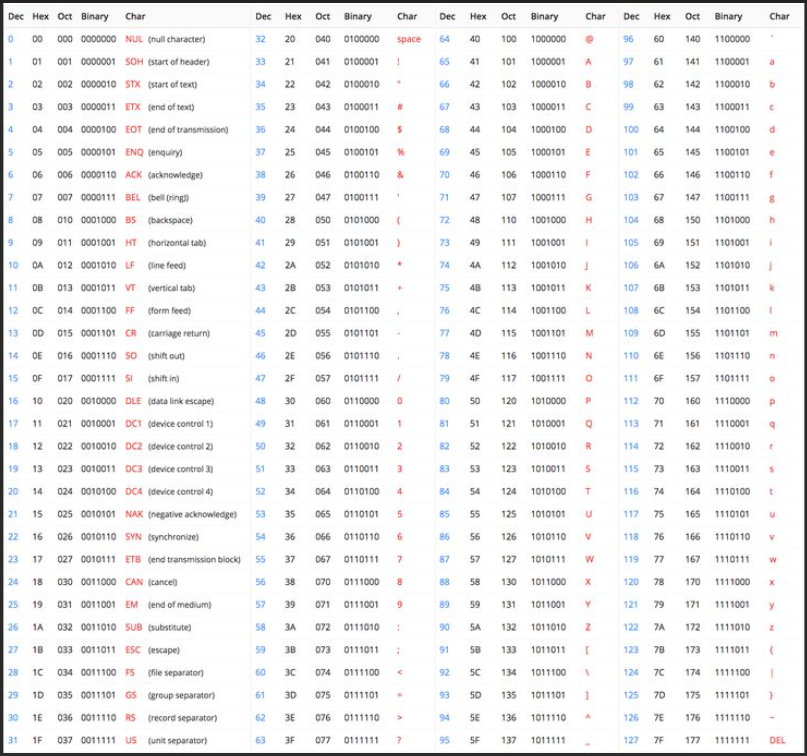

ASCII siedmiobitowy system kodowania znaków, używany we współczesnych komputerach oraz sieciach komputerowych, a także innych urządzeniach wyposażonych w mikroprocesor. Przyporządkowuje liczbom z zakresu 0−127: litery alfabetu łacińskiego języka angielskiego, cyfry, znaki przestankowe i inne symbole oraz polecenia sterujące. Na przykład litera „a” jest kodowana jako liczba 97, a znak spacji jest kodowany jako 32. Większość współczesnych systemów kodowania znaków jest rozszerzeniem standardu ASCII. ASCII jest tradycyjną nazwą tego zestawu znaków, jednak IANA zaleca używanie określenia US-ASCII[1], które podkreśla pochodzenie standardu, oraz to, pod kątem jakich znaków był projektowany (ASCII nie zawiera na przykład liter diakrytyzowanych, powszechnych w alfabetach europejskich).
